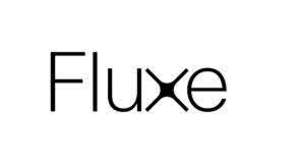

Trade Mark Journal No.2025/016 18 April 2025
UK00004165913 26 February 2025 (5,32,35)

- Class 5
- Dietetic foods adapted for medical purposes; Dietary supplements for humans; Albumin dietary supplements; Dietary fibre; Vitamin food supplements, edible carbohydrate gels, Dietary supplements; dietary food supplements; nutritional supplements; mineral food-supplements; food-supplements based on vitamins, minerals and raw products from plants; health food supplements; vitamin preparations; herbal supplements and herbal extracts; herbal beverages for medicinal and nutritional purposes; meal replacement powders; nutritional drink mixes for use as a meal replacement; mineral supplements; nutritional powders; food supplements, tablets and capsules; carbohydrate supplements; amino acid supplements; dietetic substances for medical use and medical preparations for slimming purposes; vitamin supplements; food supplements for dietetic use; herbal extracts for medical purposes; protein supplements; food supplements (non-medicated) in the form of confectionery; dietetic and slimming foodstuffs and substances for medical purposes; nutrition food bars; food supplements for sports nutrition purposes, whey proteins; dietetic and nutritional foodstuffs for medical purposes enriched with vitamins, proteins and minerals; dietary drink mixes for use as a meal replacement for nutritional purposes, being carbohydrate-based nutritional drink mixes; herbal extracts, other than those for medical purposes; dietary drink mixes for use as a meal replacement for nutritional purposes, namely protein-based nutritional drink mixes; protein supplement milk shakes.
- Class 32
- Fruit juices, non-alcoholic beverages, preparations for making non-alcoholic beverages, mineral and aerated beverages, soft drinks, soda water, aerated waters, mineral waters, table waters, carbonated drinks, concentrates for use in the preparation of soft drinks and fruit juice drinks; Beer; Soft drinks; Mineral and aerated waters; Fruit and vegetable drinks and fruit and vegetable juices, Fruit-vegetable juice; Syrups and other non-alcoholic preparations for making beverages; Low-calorie concentrates and preparations for making beverages; Low-calorie and/or high-protein powdered preparations for making beverages; Energy drink.
- Class 35
- Retail services and online retail services in connection with the sale of Dietetic foods adapted for medical purposes, Dietary supplements for humans, Albumin dietary supplements, Dietary fibre, Mineral food supplements, Nutritional supplements, Vitamin food supplements, Dietary supplements, dietary food supplements, nutritional supplements, mineral food-supplements, food-supplements based on vitamins, minerals and raw products from plants, health food supplements, vitamin preparations, herbal supplements and herbal extracts, herbal beverages for medicinal and nutritional purposes, meal replacement powders, nutritional drink mixes for use as a meal replacement, mineral supplements, nutritional powders, food supplements, tablets and capsules, carbohydrate supplements, amino acid supplements, dietetic substances for medical use and medical preparations for slimming purposes, vitamin supplements, food supplements for dietetic use, herbal extracts for medical purposes, protein supplements, food supplements (non-medicated) in the form of confectionery, dietetic and slimming foodstuffs and substances for medical purposes, nutrition food bars, food supplements for sports nutrition purposes, whey proteins, dietetic and nutritional foodstuffs for medical purposes enriched with vitamins, proteins and minerals, dietary drink mixes for use as a meal replacement for nutritional purposes, being carbohydrate-based nutritional drink mixes, herbal extracts, other than those for medical purposes, dietary drink mixes for use as a meal replacement for nutritional purposes, namely protein-based nutritional drink mixes, protein supplement milk shakes, Fruit juices, non-alcoholic beverages, preparations for making non-alcoholic beverages, mineral and aerated beverages, soft drinks, soda water, aerated waters, mineral waters, table waters, carbonated drinks, concentrates for use in the preparation of soft drinks and fruit juice drinks, Beer, Soft drinks, Mineral and aerated waters, Fruit and vegetable drinks and fruit and vegetable juices, Fruit-vegetable juice, Syrups and other non-alcoholic preparations for making beverages, Low-calorie concentrates and preparations for making beverages, Low-calorie and/or high-protein powdered preparations for making beverages, Energy drink, edible carbohydrate gels.
Ian O'Rourke
Representative: Tomkins & Co